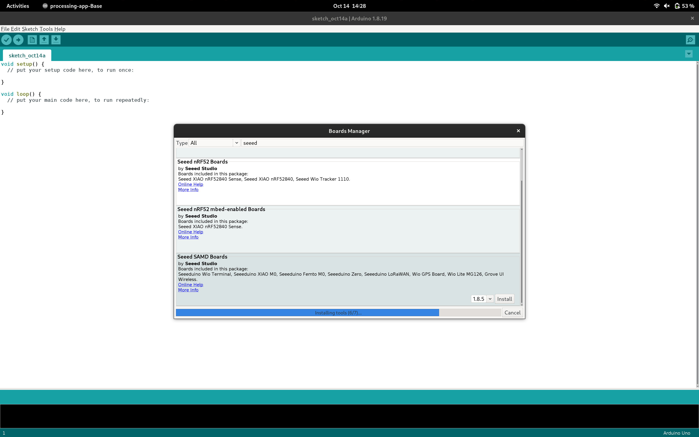
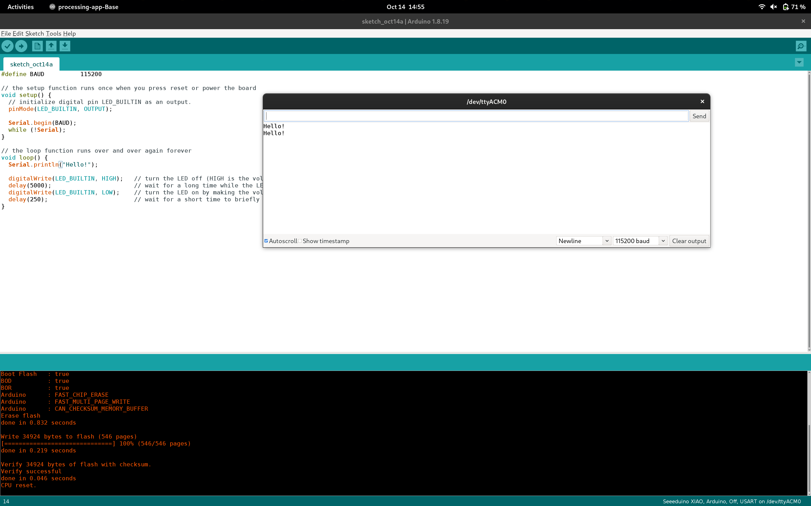
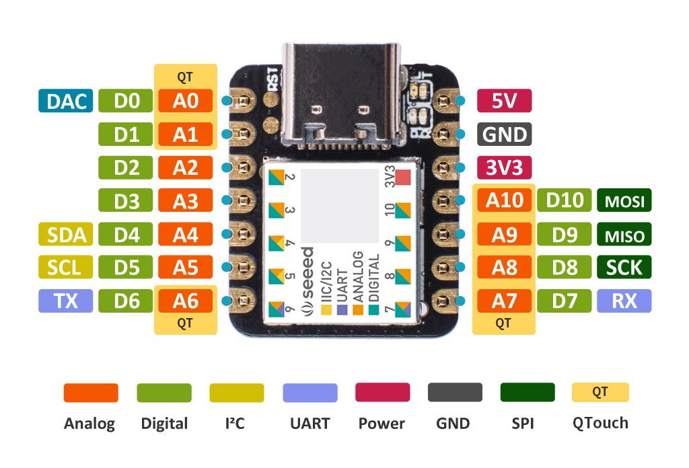
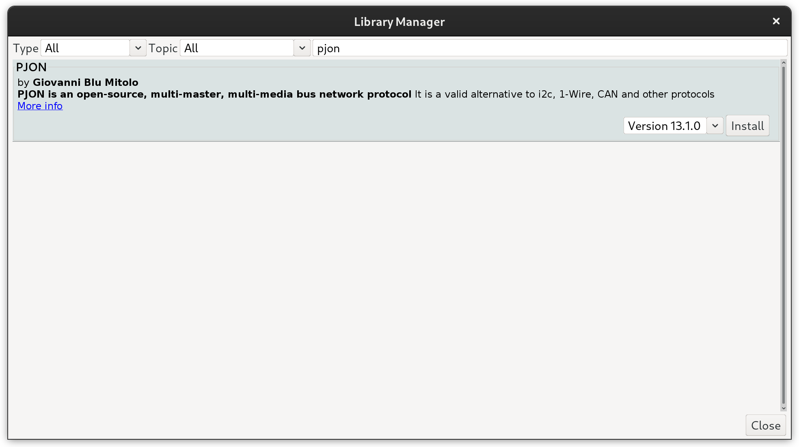
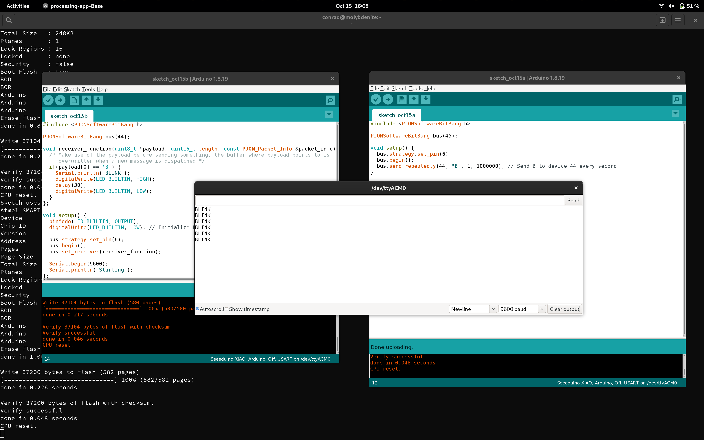

Exploring the Seeeduino XIAO
Getting a Seeeduino XIAO blinking on NixOS: board packages, permission errors, and wishing it were all code and files.
nix-shell -p arduino
Xiao seeed blink https://desertbot.io/blog/seeeduino-xiao-blink

Arduino on NixOS is certainly better than it once was, it's easy to jump into a shell and start hacking away. My issue with the Arduino "way" though is that it takes far too much clicking. I would prefer to learn Rust just so that setup and configuration is completely handled by code and files.
While I was getting started, I added the Board Manager URL and installed the Seeed SAMD boards only to run into permission errors for access to /dev/ACM0. I closed Arduino, launched with sudo, and had to reinstall everything again.
As I type - I'm still waiting for the board packages to install.
https://wiki.seeedstudio.com/Seeeduino-XIAO/
The GIF that Seeed Studio provided ended up being my ticket to programming - the "double-short RST" to enter bootloader mode has be done quicker than I thought.


I'm working towards building some code for I2C communication, but I'd like for each system to be capable of dynamically assigning it's role.
My first thought was to have each device respond in the same manner: - First, the device enter subordinate mode and awaits an I2C broadcast that the main board sends every long-interval. - If the long-interval passes and no broadcast is received, then the device promotes itself to a main board and starts sending broadcasts. The message is an always-incrementing counter that updates when subordinate devices respond. The number becomes the subordinate address. - If a broadcast is received, then the number transmitted becomes the device's address.
This concept has a few problems. - If 2 networks are created where 2 devices are joined, and then the networks are joined, then there will be 2 main nodes. - If two new subordinates come online when there is already a main node, then the subordinates can receive the broadcast at the same time and acquire the same address.
Other solutions suggested include adding another wire - but Pinouts are expensive real estate on these Xiao's!
Perhaps a better (less wire usage, more configurable, weird and obscure) option is PJON - The Padded Jittering Operative Network is a network protocol that can be configured to use light, as low as a single wire, LoRa, even UDP to communicate up to a few kBps.
Addressing can be done dynamically, and collision handling is built in (I think... source?).
SO instead of trying to do the first, easiest thing first (I2C) - I'm jumping ahead to seeing if I can get PJON to work. If it doesn't - whine and wine time. Otherwise, we're off to the races.
#include <PJONSoftwareBitBang.h>
PJONSoftwareBitBang bus(45);
void setup() {
bus.strategy.set_pin(6);
bus.begin();
bus.send_repeatedly(44, "B", 1, 1000000); // Send B to device 44 every second
}
void loop() {
bus.update();
};
#include <PJONSoftwareBitBang.h>
PJONSoftwareBitBang bus(44);
void receiver_function(uint8_t *payload, uint16_t length, const PJON_Packet_Info &packet_info) {
/* Make use of the payload before sending something, the buffer where payload points to is
overwritten when a new message is dispatched */
if(payload[0] == 'B') {
Serial.println("BLINK");
digitalWrite(LED_BUILTIN, HIGH);
delay(30);
digitalWrite(LED_BUILTIN, LOW);
}
};
void setup() {
pinMode(LED_BUILTIN, OUTPUT);
digitalWrite(LED_BUILTIN, LOW); // Initialize LED 13 to be off
bus.strategy.set_pin(6);
bus.begin();
bus.set_receiver(receiver_function);
Serial.begin(9600);
Serial.println("Starting");
};
void loop() {
bus.receive(1000);
};
Installing PJON...


https://github.com/gioblu/PJON/tree/master/src/strategies/SoftwareBitBang
https://github.com/gioblu/PJON/wiki/Mitigate-interference
Before I wrap up - dumping links
xiao_m0 - crates.io: Rust Package Registry https://crates.io/crates/xiao_m0
atsamd/boards/xiao_m0/examples/blink.rs at master · atsamd-rs/atsamd · GitHub https://github.com/atsamd-rs/atsamd/blob/master/boards/xiao_m0/examples/blink.rs
How to blink a Seeeduino XIAO onboard LED (Mac, 7 Steps) – desertbot.io https://desertbot.io/blog/seeeduino-xiao-blink
Seeed Studio XIAO SAMD21 with TinyUSB | Seeed Studio Wiki https://wiki.seeedstudio.com/Seeeduino-XIAO-TinyUSB/
Introduction to SPI Interface | Analog Devices https://www.analog.com/en/analog-dialogue/articles/introduction-to-spi-interface.html
PJON/documentation/data-reception.md at master · gioblu/PJON · GitHub https://github.com/gioblu/PJON/blob/master/documentation/data-reception.md
PJON/src/strategies/SoftwareBitBang at master · gioblu/PJON · GitHub https://github.com/gioblu/PJON/tree/master/src/strategies/SoftwareBitBang
Mitigate interference · gioblu/PJON Wiki · GitHub https://github.com/gioblu/PJON/wiki/Mitigate-interference
PJON/examples/ARDUINO/Local/SoftwareBitBang/BlinkTest/Transmitter/Transmitter.ino at master · gioblu/PJON · GitHub https://github.com/gioblu/PJON/blob/master/examples/ARDUINO/Local/SoftwareBitBang/BlinkTest/Transmitter/Transmitter.ino
PJON/examples/ARDUINO/Local/SoftwareBitBang/BlinkTest/Receiver/Receiver.ino at master · gioblu/PJON · GitHub https://github.com/gioblu/PJON/blob/master/examples/ARDUINO/Local/SoftwareBitBang/BlinkTest/Receiver/Receiver.ino
Seeed Studio XIAO SAMD21 with TinyUSB | Seeed Studio Wiki https://wiki.seeedstudio.com/Seeeduino-XIAO-TinyUSB/